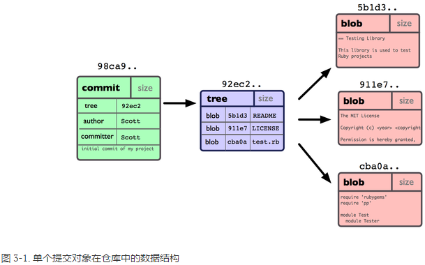
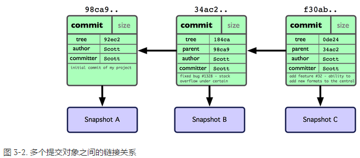
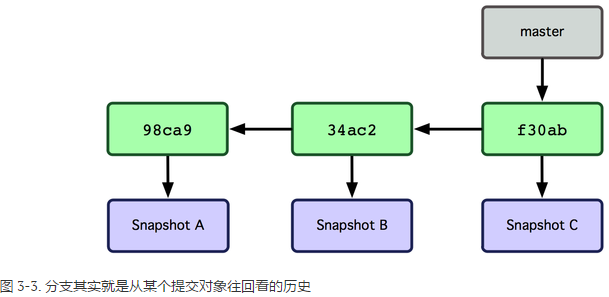

Git 分支
一、何谓分支
Git 仓库中有五个对象：三个表示文件快照内容的 blob 对象；一个记录着目录树内容及其中各个文件对应 blob 对象索引的 tree 对象；以及一个包含指向 tree 对象（根目录）的索引和其他提交信息元数据的 commit 对象。

作些修改后再次提交，那么这次的提交对象会包含一个指向上次提交对象的指针（译注：即下图中的parent 对象）。

Git 中的分支，其实本质上仅仅是个指向 commit 对象的可变指针。Git 会使用 master 作为分支的默认名字。在若干次提交后，你其实已经有了一个指向最后一次提交对象的 master 分支，它在每次提交的时候都会自动向前移动。

二、分支的新建、合并和管理
新建分支
- git branch testing：创建一个新的分支testing，不切换。
- git checkout testing：切换到testing分支
- git checkout -b testing：新建分支testing并切换到该分支。
合并分支
- git merge testing：合并分支testing到当前分支
遇到冲突时的分支合并：
使用 git status 查看发生冲突的文件（unmerged）。解决冲突后 git add 将其标记为已解决状态。
git mergetool：调用一个可视化的合并工具并引导你解决所有冲突。
分支的管理
- git branch -d testing：删除分支testing
- git branch：列出当前所有分支 git branch -v：查看各个分支最后一个提交对象的信息 git branch --merged：查看哪些分支已被并入当前分支 git branch --no-merged：查看尚未合并的工作
三、远程分支
git fetch origin：同步远程服务器上的数据到本地 值得注意的是，在 fetch 操作下载好新的远程分支之后，你仍然无法在本地编辑该远程仓库中的分支。如果想要一份自己的分支来开发，可以在远程分支的基础上分化出一个新的分支来。 例：git checkout -b serverfix origin/serverfix：这会切换到新建的 serverfix 本地分支，其内容同远程分支 origin/serverfix 一致，这样你就可以在里面继续开发了。git push (远程仓库名) (分支名)：推送本地分支到远程仓库 git push origin localname： 把本地分支push到远程分支git merge origin/serverfix：把该远程分支的内容合并到当前分支git push [远程名] :[分支名]：删除远程分支
四、分支的衍合
最容易的整合分支的方法是 merge 命令，它会把两个分支最新的快照（C3 和 C4）以及二者最新的共同祖先（C2）进行三方合并，合并的结果是产生一个新的提交对象（C5）。
另一种方法是把在 C3 里产生的变化补丁在 C4 的基础上重新打一遍。在 Git 里，这种操作叫做衍合（rebase）。有了 rebase 命令，就可以把在一个分支里提交的改变移到另一个分支里重放一遍。
虽然最后整合得到的结果没有任何区别，但衍合能产生一个更为整洁的提交历史。
一般我们使用衍合的目的，是想要得到一个能在远程分支上干净应用的补丁 — 比如某些项目你不是维护者，但想帮点忙的话，最好用衍合：先在自己的一个分支里进行开发，当准备向主项目提交补丁的时候，根据最新的 origin/master 进行一次衍合操作然后再提交，这样维护者就不需要做任何整合工作，只需根据你提供的仓库地址作一次快进合并，或者直接采纳你提交的补丁。
合并结果中最后一次提交所指向的快照，无论是通过衍合，还是三方合并，都会得到相同的快照内容，只不过提交历史不同罢了。衍合是按照每行的修改次序重演一遍修改，而合并是把最终结果合在一起。
git rebase --onto master server client：这好比在说：“取出 client 分支，找出 client 分支和 server 分支的共同祖先之后的变化，然后把它们在 master 上重演一遍”。
git rebase [主分支] [特性分支]：先取出特性分支，然后在主分支上重演
使用准则：一旦分支中的提交对象发布到公共仓库，就千万不要对该分支进行衍合操作。